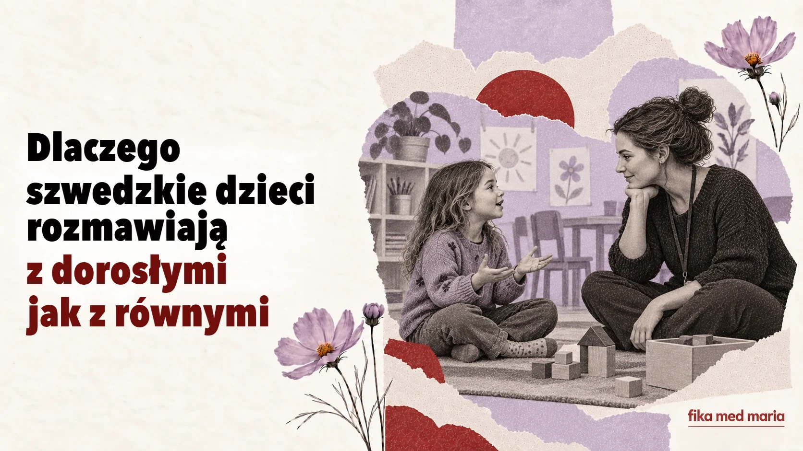

Dlaczego szwedzkie dzieci rozmawiają z dorosłymi jak z równymi sobie

Dziecko zwraca się do wychowawczyni po imieniu. Spiera się z dorosłym. Pyta, dlaczego ma coś robić. Na pierwszy rzut oka może to wyglądać na brak dystansu, a nawet szacunku.
Ale w szwedzkim kontekście partnerski ton nie oznacza takiej samej odpowiedzialności. Dorosły pozostaje dorosłym – po prostu autorytet nie musi się wyrażać w formach grzecznościowych i rozkazach.
Du nie usuwa granic
Szwedzkie dzieci zwracają się do wychowawców, nauczycieli i większości innych dorosłych na du oraz często mówią do nich po imieniu. Brak osobnej formy grzecznościowej zmniejsza dystans językowy, ale nie zaciera ról.
Nauczyciel może mówić ciepło i równie wyraźnie wyznaczać granicę:
Jag hör att du är arg, men du får inte slå.
Słyszę, że się złościsz, ale bić nie wolno.
To zdanie zawiera jednocześnie uznanie emocji i zasadę. Rozumieć uczucia nie znaczy pozwalać na każde zachowanie.
Dziecku tłumaczy się „dlaczego”
Zamiast krótkiego „bo tak powiedziałam” dziecko często słyszy wyjaśnienie skutku:
Vi behöver gå nu för att hinna till förskolan i tid.
Musimy już wychodzić, żeby dotrzeć do przedszkola na czas.
Du behöver ha hjälm för att skydda huvudet.
Potrzebujesz kasku, żeby chronić głowę.
Wyjaśnienie nie oznacza, że każda zasada jest poddawana pod głosowanie. Pomaga dziecku dostrzec logikę, a nie tylko władzę dorosłego.
Wybór w wyznaczonych granicach
Dziecku można zaproponować wybór, ale ramy tego wyboru wyznacza dorosły:
Vill du ta på dig den röda eller den blå tröjan?
Chcesz włożyć czerwony czy niebieski sweter?
Opcji „w ogóle się nie ubierać” tu nie ma. To nie rezygnacja z prowadzenia dziecka, tylko sposób, by pozwolić mu mieć wpływ tam, gdzie jest to bezpieczne.
Nie „jesteś niedobry”, tylko „tak robić nie wolno”
W rozmowie ważne jest oddzielanie człowieka od jego postępku:
Det var inte okej att ta leksaken från henne.
Nie było w porządku zabierać jej zabawkę.
To coś innego niż ocena Du är dum – „Jesteś niedobry/głupi”. Pierwsze zdanie nazywa zachowanie, które można zmienić. Drugie przypina łatkę samemu dziecku.
Dziecięce nej też trzeba usłyszeć
Jeśli dziecko mówi nej, dorosły może dopytać o przyczynę:
Jag hör att du inte vill. Kan du berätta varför?
Słyszę, że nie chcesz. Możesz powiedzieć, dlaczego?
To nie jest obietnica, że dorosły się zgodzi. Po odpowiedzi może powiedzieć:
Jag förstår, men vi behöver ändå gå till läkaren.
Rozumiem, ale i tak musimy pójść do lekarza.
Dziecko dostaje prawo do uczuć i prawo głosu, ale nie odpowiedzialność za decyzję, na którą jest jeszcze za małe.
Zdania, które rodzice mogą usłyszeć w przedszkolu
Hur har lämningen fungerat?
Jak przebiegało poranne pożegnanie?
Han har varit delaktig i leken.
Brał aktywny udział w zabawie.
Hon behöver stöd i övergångarna.
Ona potrzebuje wsparcia przy przechodzeniu od jednych zajęć do drugich.
Vi vill gärna följa upp det här.
Chcielibyśmy wrócić do tej sprawy i obserwować, jak rozwija się sytuacja.
Ostatnie zdanie niekoniecznie oznacza poważny problem. To jednak sygnał, że personel chce kontynuować obserwację lub rozmowę.
Jak zadać pytanie, jeśli się nie zgadzasz
Zamiast milczeć albo od razu się bronić, można powiedzieć:
- Kan du ge ett konkret exempel? – Możesz podać konkretny przykład?
- Hur brukar ni hantera sådana situationer? – Jak zazwyczaj postępujecie w takich sytuacjach?
- Vad kan vi göra hemma? – Co możemy zrobić w domu?
- När följer vi upp det här? – Kiedy wrócimy do tej sprawy?
W ten sposób rozmowa staje się wspólnym poszukiwaniem rozwiązania.
Dziecko nie chce kończyć zabawy, ale trzeba już wychodzić. Ułóż zdanie z trzech części: uznać uczucie, wyznaczyć granicę, dać mały wybór.
Na przykład:
Jag förstår att du vill leka mer, men vi behöver gå nu. Vill du ta med bilen eller nallen?
Fika med Maria przygotowuje praktyczne materiały do kontaktów z przedszkolem, szkołą, personelem medycznym i innymi rodzicami. Ściągawka dla mam.
Czy szwedzkim dzieciom wszystko wolno?
Nie. Idea uczestnictwa dziecka nie oznacza braku zasad. Granice często wyznacza się spokojnie i wyjaśnia ich przyczynę.
Co oznacza delaktig?
Zaangażowany, czyli ktoś, kto bierze udział i ma możliwość wpływu odpowiednio do sytuacji.